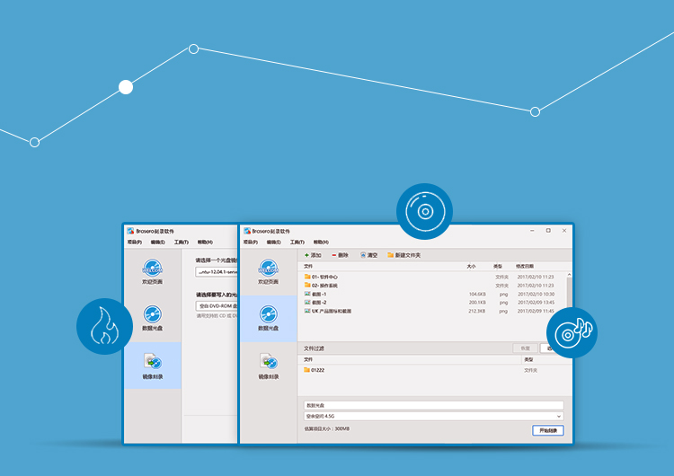

<div class="main wide">

<div class="text" style="position:absolute; top:95px; left:190px">

<div><h1>Kylin Burner</h1></div>

<div><h2>
<p>Data and ISO recording is available in Kylin Record. Burning and continue-burning of CD/DVD-R and DVD+R are supported. It is a pleasant, stable and lightweight application.</p>
</h2></div>


</div>



</div>
